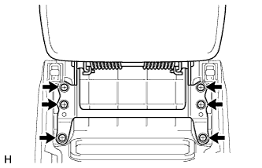
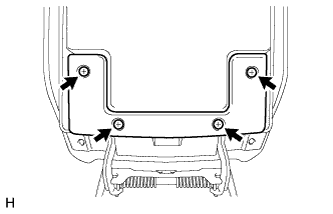
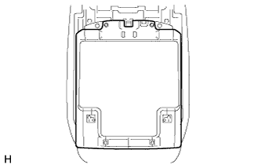
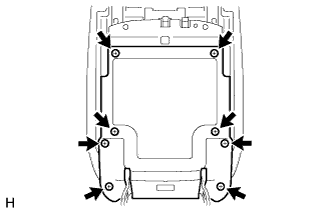
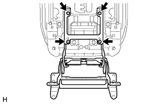
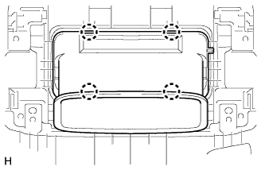
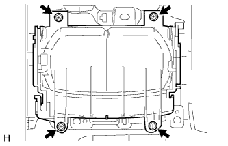
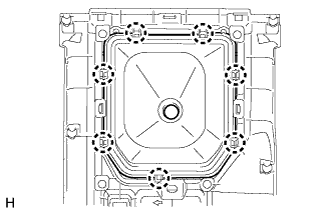
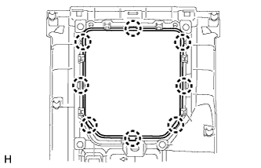
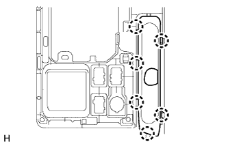

ПЕРЕДНИЙ ВЕЩЕВОЙ ЯЩИК В ОБЛИЦОВКЕ ТУННЕЛЯ ПОЛА (для моделей с механической трансмиссией) > РАЗБОРКА |
| 1. СНИМИТЕ ДВЕРЦУ ВЕЩЕВОГО ЯЩИКА В ОБЛИЦОВКЕ ТУННЕЛЯ ПОЛА В СБОРЕ |
|  |
Выверните 6 винтов и снимите дверцу вещевого ящика в облицовке туннеля пола.
| 2. СНИМИТЕ ПЕТЛЮ ДВЕРЦЫ ВЕЩЕВОГО В ОБЛИЦОВКЕ ТУННЕЛЯ ПОЛА В СБОРЕ |
|  |
Выверните 4 винта.
|  |
Снимите крышку.
|  |
Выверните 8 винтов и снимите крышку.
|  |
Выверните 4 винта и снимите петлю дверцы вещевого ящика в облицовке туннеля пола.
| 3. СНИМИТЕ ДЕФЛЕКТОР НА ВЕЩЕВОМ ЯЩИКЕ В ОБЛИЦОВКЕ ТУННЕЛЯ ПОЛА В СБОРЕ |
|  |
Отсоедините 4 захвата и снимите воздуховод с дефлектором вещевого ящика в облицовке туннеля пола.
| 4. СНИМИТЕ ПОДСТАВКУ ДЛЯ ЧАШКИ С ПАНЕЛИ ПРИБОРОВ |
|  |
Выверните 4 винта и снимите подставку для чашки с панели приборов.
| 5. СНИМИТЕ ЧЕХОЛ ЛЮЧКА РЫЧАГА ПЕРЕКЛЮЧАТЕЛЯ ПЕРЕДАЧ В СБОРЕ |
|  |
Освободите 7 захватов и снимите чехол лючка рычага переключения передач.
| 6. СНИМИТЕ ОПРАВУ ЛЮЧКА РЫЧАГА ПЕРЕКЛЮЧЕНИЯ ПЕРЕДАЧ |
|  |
Освободите 8 захватов и снимите оправу лючка рычага переключения передач.
| 7. СНИМИТЕ ВЕРХНЮЮ ПАНЕЛЬ КОНСОЛИ |
 |
Выверните 7 винтов.
Освободите 4 захвата и фиксатор и снимите верхнюю облицовку панели пола.
| 8. СНИМИТЕ КРЫШКУ ОТВЕРСТИЯ СТОЯНОЧНОГО ТОРМОЗА В СБОРЕ |
|  |
Освободите 6 захватов и снимите крышку отверстия стояночного тормоза.